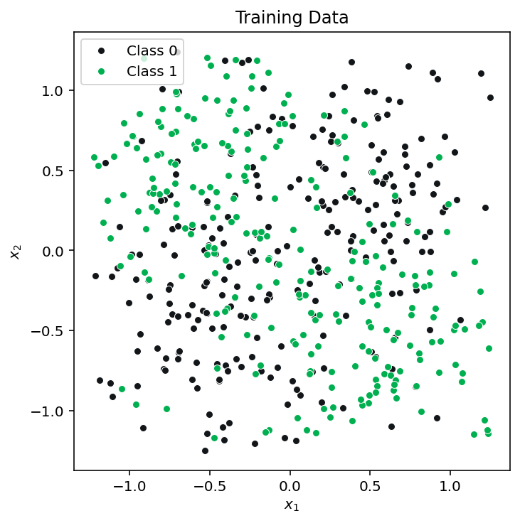

# Optional for clear plotting on Macs
# %config InlineBackend.figure_format='retina'
# Some of the network training leads to warnings. When we know and are OK with
# what's causing the warning and simply don't want to see it, we can use the
# following code. Run this block
# to disable warnings
import sys
import os
import warnings
if not sys.warnoptions:
warnings.simplefilter("ignore")
os.environ["PYTHONWARNINGS"] = 'ignore'Assignment 4
Neural Networks
Instructions
Instructions for all assignments can be found here. Note: this assignment falls under collaboration Mode 2: Individual Assignment – Collaboration Permitted. Please refer to the syllabus for additional information. Please be sure to list the names of any students that you worked with on this assignment. Total points in the assignment add up to 90; an additional 10 points are allocated to professionalism and presentation quality.
Learning objectives
Through completing this assignment you will be able to…
- Identify key hyperparameters in neural networks and how they can impact model training and fit
- Build, tune the parameters of, and apply feed-forward neural networks to data
- Implement and explain each and every part of a standard fully-connected neural network and its operation including feed-forward propagation, backpropagation, and gradient descent.
- Apply a standard neural network implementation and search the hyperparameter space to select optimized values.
- Develop a detailed understanding of the math and practical implementation considerations of neural networks, one of the most widely used machine learning tools, so that it can be leveraged for learning about other neural networks of different model architectures.
Exercise 1 - Exploring and optimizing neural network hyperparameters
[60 points]
Neural networks have become ubiquitous in the machine learning community, demonstrating exceptional performance over a wide range of supervised learning tasks. The benefits of these techniques come at a price of increased computational complexity and model designs with increased numbers of hyperparameters that need to be correctly set to make these techniques work. It is common that poor hyperparameter choices in neural networks result in significant decreases in model generalization performance. The goal of this exercise is to better understand some of the key hyperparameters you will encounter in practice using neural networks so that you can be better prepared to tune your model for a given application. Through this exercise, you will explore two common approaches to hyperparameter tuning a manual approach where we greedily select the best individual hyperparameter (often people will pick potentially sensible options, try them, and hope it works) as well as a random search of the hyperparameter space which as been shown to be an efficient way to achieve good hyperparameter values.
To explore this, we’ll be using the example data created below throughout this exercise and the various training, validation, test splits. We will select each set of hyperparameters for our greedy/manual approach and the random search using a training/validation split, then retrain on the combined training and validation data before finally evaluating our generalization performance for both our final models on the test data.
import numpy as np
from sklearn.model_selection import PredefinedSplit
#-----------------------------------------------------------------------------
# Create the data
#-----------------------------------------------------------------------------
# Data generation function to create a checkerboard-patterned dataset
def make_data_normal_checkerboard(n, noise=0):
n_samples = int(n/4)
shift = 0.5
c1a = np.random.randn(n_samples,2)*noise + [-shift, shift]
c1b = np.random.randn(n_samples,2)*noise + [shift, -shift]
c0a = np.random.randn(n_samples,2)*noise + [shift, shift]
c0b = np.random.randn(n_samples,2)*noise + [-shift, -shift]
X = np.concatenate((c1a,c1b,c0a,c0b),axis=0)
y = np.concatenate((np.ones(2*n_samples), np.zeros(2*n_samples)))
# Set a cutoff to the data and fill in with random uniform data:
cutoff = 1.25
indices_to_replace = np.abs(X)>cutoff
for index,value in enumerate(indices_to_replace.ravel()):
if value:
X.flat[index] = np.random.rand()*2.5-1.25
return (X,y)
# Training datasets
np.random.seed(42)
noise = 0.45
X_train,y_train = make_data_normal_checkerboard(500, noise=noise)
# Validation and test data
X_val,y_val = make_data_normal_checkerboard(500, noise=noise)
X_test,y_test = make_data_normal_checkerboard(500, noise=noise)
# For RandomSeachCV, we will need to combine training and validation sets then
# specify which portion is training and which is validation
# Also, for the final performance evaluation, train on all of the training AND
# validation data
X_train_plus_val = np.concatenate((X_train, X_val), axis=0)
y_train_plus_val = np.concatenate((y_train, y_val), axis=0)
# Create a predefined train/test split for RandomSearchCV (to be used later)
validation_fold = np.concatenate((-1*np.ones(len(y_train)), np.zeros(len(y_val))))
train_val_split = PredefinedSplit(validation_fold)To help get you started we should always begin by visualizing our training data, here’s some code that does that:
import matplotlib.pyplot as plt
# Code to plot the sample data
def plot_data(ax,X,y,title, limits):
# Select the colors to use in the plots
color0 = '#121619' # Dark grey
color1 = '#00B050' # Green
color_boundary='#858585'
# Separate samples by class
samples0 = X[y==0]
samples1 = X[y==1]
ax.plot(samples0[:,0],samples0[:,1],
marker='o',
markersize=5,
linestyle="None",
color=color0,
markeredgecolor='w',
markeredgewidth=0.5,
label='Class 0')
ax.plot(samples1[:,0],samples1[:,1],
marker='o',
markersize=5,
linestyle="None",
color=color1,
markeredgecolor='w',
markeredgewidth=0.5,
label='Class 1')
ax.set_title(title)
ax.set_xlabel('$x_1$')
ax.set_ylabel('$x_2$')
ax.legend(loc='upper left')
ax.set_aspect('equal')
fig, ax = plt.subplots(constrained_layout=True, figsize=(5,5))
limits = [-1.25, 1.25, -1.25, 1.25]
plot_data(ax, X_train, y_train, 'Training Data', limits)
The hyperparameters we want to explore control the architecture of our model and how our model is fit to our data. These hyperparameters include the (a) learning rate, (b) batch size, and the (c) regularization coefficient, as well as the (d) model architecture hyperparameters (the number of layers and the number of nodes per layer). We’ll explore each of these and determine an optimized configuration of the network for this problem through this exercise. For all of the settings we’ll explore and just, we’ll assume the following default hyperparameters for the model (we’ll use scikit learn’s MLPClassifier as our neural network model):
learning_rate_init= 0.03hidden_layer_sizes= (30,30) (two hidden layers, each with 30 nodes)alpha= 0 (regularization penalty)solver= ‘sgd’ (stochastic gradient descent optimizer)tol= 1e-5 (this sets the convergence tolerance)early_stopping= False (this prevents early stopping)activation= ‘relu’ (rectified linear unit)n_iter_no_change= 1000 (this prevents early stopping)batch_size= 50 (size of the minibatch for stochastic gradient descent)max_iter= 500 (maximum number of epochs, which is how many times each data point will be used, not the number of gradient steps)
This default setting is our initial guess of what good values may be. Notice there are many model hyperparameters in this list: any of these could potentially be options to search over. We constrain the search to those hyperparameters that are known to have a significant impact on model performance.
1.1. Visualize the impact of different hyperparameter choices on classifier decision boundaries. Visualize the impact of different hyperparameter settings. Starting with the default settings above make the following changes (only change one hyperparameter at a time). For each hyperparameter value, plot the decision boundary on the training data (you will need to train the model once for each parameter value):
- Vary the architecture (
hidden_layer_sizes) by changing the number of nodes per layer while keeping the number of layers constant at 2: (2,2), (5,5), (30,30). Here (X,X) means a 2-layer network with X nodes in each layer. - Vary the learning rate: 0.0001, 0.01, 1
- Vary the regularization: 0, 1, 10
- Vary the batch size: 5, 50, 500
This should produce 12 plots, altogether. For easier comparison, please plot nodes & layers combinations, learning rates, regularization strengths, and batch sizes in four separate rows (with three columns each representing a different value for each of those hyperparameters).
As you’re exploring these settings, visit this website, the Neural Network Playground, which will give you the chance to interactively explore the impact of each of these parameters on a similar dataset to the one we use in this exercise. The tool also allows you to adjust the learning rate, batch size, regularization coefficient, and the architecture and to see the resulting decision boundary and learning curves. You can also visualize the model’s hidden node output and its weights, and it allows you to add in transformed features as well. Experiment by adding or removing hidden layers and neurons per layer and vary the hyperparameters.
1.2. Manual (greedy) hyperparameter tuning I: manually optimize hyperparameters that govern the learning process, one hyperparameter at a time. Now with some insight into which settings may work better than others, let’s more fully explore the performance of these different settings in the context of our validation dataset through a manual optimization process. Holding all else constant (with the default settings mentioned above), vary each of the following parameters as specified below. Train your algorithm on the training data, and evaluate the performance of your trained algorithm on the validation dataset. Here, overall accuracy is a reasonable performance metric since the classes are balanced and we don’t weight one type of error as more important than the other; therefore, use the score method of the MLPClassifier for this. Create plots of accuracy vs each parameter you vary (this will result in three plots).
- Vary learning rate logarithmically from \(10^{-5}\) to \(10^{0}\) with 20 steps
- Vary the regularization parameter logarithmically from \(10^{-8}\) to \(10^2\) with 20 steps
- Vary the batch size over the following values: \([1,3,5,10,20,50,100,250,500]\)
For each of these cases:
- Based on the results, report your optimal choices for each of these hyperparameters and why you selected them.
- Since neural networks can be sensitive to initialization values, you may notice these plots may be a bit noisy. Consider this when selecting the optimal values of the hyperparameters. If the noise seems significant, run the fit and score procedure multiple times (without fixing a random seed) and report the average. Rerunning the algorithm will change the initialization and therefore the output (assuming you do not set a random seed for that algorithm).
- Use the chosen hyperparameter values as the new default settings for 1.3 and 1.4.
1.3. Manual (greedy) hyperparameter tuning II: manually optimize hyperparameters that impact the model architecture. Next, we want to explore the impact of the model architecture on performance and optimize its selection. This means varying two parameters at a time instead of one as above. To do this, evaluate the validation accuracy resulting from training the model using each pair of possible numbers of nodes per layer and number of layers from the lists below. We will assume that for any given configuration the number of nodes in each layer is the same (e.g. (2,2,2), which would be a 3-layer network with 2 hidden node in each layer and (25,25) are valid, but (2,5,3) is not because the number of hidden nodes varies in each layer). Use the manually optimized values for learning rate, regularization, and batch size selected from 1.2.
Number of nodes per layer: \([1,2,3,4,5,10,15,25,30]\)
Number of layers = \([1,2,3,4]\) Report the accuracy of your model on the validation data. For plotting these results, use heatmaps to plot the data in two dimensions. To make the heatmaps, you can use [this code for creating heatmaps] https://matplotlib.org/stable/gallery/images_contours_and_fields/image_annotated_heatmap.html). Be sure to include the numerical values of accuracy in each grid square as shown in the linked example and label your x, y, and color axes as always. For these numerical values, round them to 2 decimal places (due to some randomness in the training process, any further precision is not typically meaningful).
When you select your optimized parameters, be sure to keep in mind that these values may be sensitive to the data and may offer the potential to have high variance for larger models. Therefore, select the model with the highest accuracy but lowest number of total model weights (all else equal, the simpler model is preferred).
What do the results show? Which parameters did you select and why?
1.4. Manual (greedy) model selection and retraining. Based the optimal choice of hyperparameters, train your model with your optimized hyperparameters on all the training data AND the validation data (this is provided as X_train_plus_val and y_train_plus_val).
- Apply the trained model to the test data and report the accuracy of your final model on the test data.
- Plot an ROC curve of your performance (plot this with the curve in 1.5 on the same set of axes you use for that question).
1.5. Automated hyperparameter search through random search. The manual (greedy) approach (setting one or two parameters at a time holding the rest constant), provides good insights into how the neural network hyperparameters impacts model fitting for this particular training process. However, it is limited in one very problematic way: it depends heavily on a good “default” setting of the hyperparameters. Those were provided for you in this exercise, but are not generally know. Our manual optimization was somewhat greedy because we picked the hyperparameters one at a time rather than looking at different combinations of hyperparameters. Adopting such a pseudo-greedy approach to that manual optimization also limits our ability to more deeply search the hyperparameter space since we don’t look at simultaneous changes to multiple parameters. Now we’ll use a popular hyperparameter optimization tool to accomplish that: random search.
Random search is an excellent example of a hyperparameter optimization search strategy that has been shown to be more efficient (requiring fewer training runs) than another common approach: grid search. Grid search evaluates all possible combinations of hyperparameters from lists of possible hyperparameter settings - a very computationally expensive process. Yet another attractive alternative is Bayesian Optimization, which is an excellent hyperparameter optimization strategy but we will leave that to the interested reader.
Our particular random search tool will be Scikit-Learn’s RandomizedSearchCV. This performs random search employing cross validation for performance evaluation (we will adjust this to ve a train/validation split).
Using RandomizedSearchCV, train on the training data while validating on the validation data (see instructions below on how to setup the train/validation split automatically). This tool will randomly pick combinations of parameter values and test them out, returning the best combination it finds as measured by performance on the validation set. You can use this example as a template for how to do this.
- To make this comparable to the training/validation setup used for the greedy optimization, we need to setup a training and validation split rather than use cross validation. To do this for
RandomSearchCVwe input the COMBINED training and validation dataset (X_train_plus_val, andy_train_plus_val) and we set thecvparameter to be thetrain_val_splitvariable we provided along with the dataset. This will setup the algorithm to make its assessments training just on the training data and evaluation on the validation data. OnceRandomSearchCVcompletes its search, it will fit the model one more time to the combined training and validation data using the optimized parameters as we would want it to. Note: The object returned by running fit (the random search) is NOT the best estimator. You can access the best estimator through the attribute.best_estimator_, assuming that you did not passrefit=False. - Set the number of iterations to at least 200 (you’ll look at 200 random pairings of possible hyperparameters). You can go as high as you want, but it will take longer the larger the value.
- If you run this on Colab or any system with multiple cores, set the parameter
n_jobsto -1 to use all available cores for more efficient training through parallelization - You’ll need to set the range or distribution of the parameters you want to sample from. Search over the same ranges as in previous problems. To tell the algorithm the ranges to search, use lists of values for candidate batch_size, since those need to be integers rather than a range; the
loguniformscipyfunction for setting the range of the learning rate and regularization parameter, and a list of tuples for thehidden_layer_sizesparameter, as you used in the greedy optimization. - Once the model is fit, use the
best_params_property of the fit classifier attribute to extract the optimized values of the hyperparameters and report those and compare them to what was selected through the manual, greedy optimization.
For the final generalization performance assessment:
- State the accuracy of the optimized models on the test dataset
- Plot the ROC curve corresponding to your best model on the test dataset through greedy hyperparameter section vs the model identified through random search (these curves should be on the same set of axes for comparison). In the legend of the plot, report the AUC for each curve. This should be one single graph with 3 curves (one for greedy search, one for random search, and one representing random chance). Please also provide AUC score for greedy research and random search.
- Plot the final decision boundary for the greedy and random search-based classifiers along with the test dataset to demonstrate the shape of the final boundary
- How did the generalization performance compare between the hyperparameters selected through the manual (greedy) search and the random search?
Exercise 2 - Build and test your own Neural Network for classification
[30 points]
There is no better way to understand how one of the core techniques of modern machine learning works than to build a simple version of it yourself. In this exercise you will construct and apply your own neural network classifier. You may use numpy if you wish but no other libraries.
2.1 [10 points] Create a neural network class that follows the scikit-learn classifier convention by implementing fit, predict, and predict_proba methods. Your fit method should run backpropagation on your training data using stochastic gradient descent. Assume the activation function is a sigmoid. Choose your model architecture to have two input nodes, two hidden layers with five nodes each, and one output node.
To guide you in the right direction with this problem, please find a skeleton of a neural network class below. You absolutely MAY use additional methods beyond those suggested in this template, but the methods listed below are the minimum required to implement the model cleanly.
Strategies for debugging. One of the greatest challenges of this implementations is that there are many parts and a bug could be present in any of them. Here are some recommended tips:
- Development environment. Consider using an Integrated Development Environment (IDE). I strongly recommend the use of VS Code and the Python debugging tools in that development environment.
- Unit tests. You are strongly encouraged to create unit tests for most modules. Without doing this will make your code extremely difficult to bug. You can create simple examples to feed through the network to validate it is correctly computing activations and node values. Also, if you manually set the weights of the model, you can even calculate backpropagation by hand for some simple examples (admittedly, that unit test would be challenging and is optional, but a unit test is possible).
- Compare against a similar architecture. You can also verify the performance of your overall neural network by comparing it against the
scikit-learnimplementation and using the same architecture and parameters as your model (your model outputs will certainly not be identical, but they should be somewhat similar for similar parameter settings).
Important Note
Building a neural net is a valuable learning opportunity, but a time intensive process. Due to the depth of effort this question requires, some students may choose not to complete this section. It’s only worth 10 points, which is not proportional to the time it takes to get it working, and that’s by design. If you choose not to build your own neural network, or if your neural network is not functional prior to submission, then use the scikit-learn implementation instead in the questions below; where it asks to compare to scikit-learn, compare against a random forest classifier instead.
Simply write “OMITTED” in your response to this question to indicate that you did not write your own neural network.
# neural network class skeleton code
class myNeuralNetwork(object):
def __init__(self, n_in, n_layer1, n_layer2, n_out, learning_rate=):
'''__init__
Class constructor: Initialize the parameters of the network including
the learning rate, layer sizes, and each of the parameters
of the model (weights, placeholders for activations, inputs,
deltas for gradients, and weight gradients). This method
should also initialize the weights of your model randomly
Input:
n_in: number of inputs
n_layer1: number of nodes in layer 1
n_layer2: number of nodes in layer 2
n_out: number of output nodes
learning_rate: learning rate for gradient descent
Output:
none
'''
def forward_propagation(self, x):
'''forward_propagation
Takes a vector of your input data (one sample) and feeds
it forward through the neural network, calculating activations and
layer node values along the way.
Input:
x: a vector of data representing 1 sample [n_in x 1]
Output:
y_hat: a vector (or scaler of predictions) [n_out x 1]
(typically n_out will be 1 for binary classification)
'''
def compute_loss(self, X, y):
'''compute_loss
Computes the current loss/cost function of the neural network
based on the weights and the data input into this function.
To do so, it runs the X data through the network to generate
predictions, then compares it to the target variable y using
the cost/loss function
Input:
X: A matrix of N samples of data [N x n_in]
y: Target variable [N x 1]
Output:
loss: a scalar measure of loss/cost
'''
def backpropagate(self, x, y):
'''backpropagate
Backpropagate the error from one sample determining the gradients
with respect to each of the weights in the network. The steps for
this algorithm are:
1. Run a forward pass of the model to get the activations
Corresponding to x and get the loss functionof the model
predictions compared to the target variable y
2. Compute the deltas (see lecture notes) and values of the
gradient with respect to each weight in each layer moving
backwards through the network
Input:
x: A vector of 1 samples of data [n_in x 1]
y: Target variable [scalar]
Output:
loss: a scalar measure of th loss/cost associated with x,y
and the current model weights
'''
def stochastic_gradient_descent_step(self):
'''stochastic_gradient_descent_step [OPTIONAL - you may also do this
directly in backpropagate]
Using the gradient values computed by backpropagate, update each
weight value of the model according to the familiar stochastic
gradient descent update equation.
Input: none
Output: none
'''
def fit(self, X, y, max_epochs=, learning_rate=, get_validation_loss=):
'''fit
Input:
X: A matrix of N samples of data [N x n_in]
y: Target variable [N x 1]
Output:
training_loss: Vector of training loss values for each epoch
validation_loss: Vector of validation loss values for each epoch
[optional output if get_validation_loss==True]
'''
def predict_proba(self, X):
'''predict_proba
Compute the output of the neural network for each sample in X, with the
last layer's sigmoid activation providing an estimate of the target
output between 0 and 1
Input:
X: A matrix of N samples of data [N x n_in]
Output:
y_hat: A vector of class predictions between 0 and 1 [N x 1]
'''
def predict(self, X, decision_thresh=):
'''predict
Compute the output of the neural network prediction for
each sample in X, with the last layer's sigmoid activation
providing an estimate of the target output between 0 and 1,
then thresholding that prediction based on decision_thresh
to produce a binary class prediction
Input:
X: A matrix of N samples of data [N x n_in]
decision_threshold: threshold for the class confidence score
of predict_proba for binarizing the output
Output:
y_hat: A vector of class predictions of either 0 or 1 [N x 1]
'''
def sigmoid(self, X):
'''sigmoid
Compute the sigmoid function for each value in matrix X
Input:
X: A matrix of any size [m x n]
Output:
X_sigmoid: A matrix [m x n] where each entry corresponds to the
entry of X after applying the sigmoid function
'''
def sigmoid_derivative(self, X):
'''sigmoid_derivative
Compute the sigmoid derivative function for each value in matrix X
Input:
X: A matrix of any size [m x n]
Output:
X_sigmoid: A matrix [m x n] where each entry corresponds to the
entry of X after applying the sigmoid derivative
function
'''2.2. Apply your neural network.
- Create training, validation, and test datasets using
sklearn.datasets.make_moons(N, noise=0.20)data, where \(N_{train} = 500\) and \(N_{test} = 100\). The validation dataset should be a portion of your training dataset that you hold out for hyperparameter tuning. - Cost function plots. Train and validate your model on this dataset plotting your training and validation cost learning curves on the same set of axes. This is the training and validation error for each epoch of stochastic gradient descent, where an epoch represents having trained on each of the training samples one time.
- Tune the learning rate and number of training epochs for your model to improve performance as needed. You’re free to use any methods you deem fit to tune your hyperparameters like grid search, random search, Bayesian optimization etc.
- Decision boundary plots. In two subplots, plot the training data on one subplot and the validation data on the other subplot. On each plot, also plot the decision boundary from your neural network trained on the training data.
- ROC Curve plots. Report your performance on the test data with an ROC curve and the corresponding AUC score. Compare against the
scikit-learnMLPClassifiertrained with the same parameters on the same set of axes and include the chance diagonal. Note: if you chose not to build your own neural network in part (a) above, or if your neural network is not functional prior to submission, then use thescikit-learnMLPClassifierclass instead for the neural network and compare it against a random forest classifier instead. Be sure to set the hidden layer sizes, epochs, and learning rate for that model, if so. - Remember to retrain your model. After selecting your hyperparameters using the validation data set, when evaluating the final performance on the ROC curve, it’s good practice to retrain your model with the selected hyperparameters on the train + validation dataset, before evaluating on the test data.
Note if you opted not to build your own neural network: in this case, for hyperparameter tuning, we recommend using the partial_fit method to train your model for every epoch. Partial fit allows you to incrementally fit on one sample at a time.
2.3. Suggest two ways in which you neural network implementation could be improved: are there any options we discussed in class that were not included in your implementation that could improve performance?